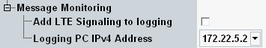

Message Monitoring Settings
Messages exchanged between the LTE signaling application and the UE can be monitored. For this purpose, the messages are sent to an external PC.
See also: "Logging"

Message monitoring settings
Enables or disables message monitoring for the LTE signaling application.
Remote command:Selects the IP address to which the messages are sent for monitoring.
The address pool is configured globally, see "Setup" dialog, section "Logging".
Remote command: